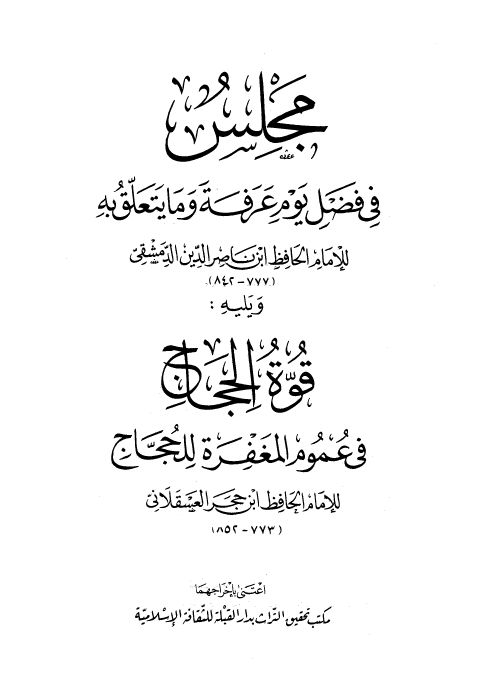

Downloads need an internet connection.
مجلس في فضل يوم عرفة وما يتعلق به ويليه قوة الحجاج في عموم المغفرة للحجاج
Authors: أحمد بن علي بن حجر العسقلاني
Editors: مكتب تحقيق التراث بدار القبلة
Publishers: دار القبلة للثقافة الإسلامية مؤسسة علوم القرآن
**▫️ العنوان: مجلس في فضل يوم عرفة وما يتعلق به ويليه قوة الحجاج في عموم المغفرة للحجاج** ▪️ المؤلف: #أحمد_بن_علي_بن_حجر_العسقلاني ▫️ المحقق: #مكتب_تحقيق_التراث_بدار_القبلة ▪️ الناشر: #دار_القبلة_للثقافة_الإسلامية • #مؤسسة_علوم_القرآن ▫️ تاريخ النشر: 1413هـ 1993م ▪️ بلد النشر: جدة، #السعودية • دمشق، #سورية ▫️ الطبعة: 1 ▪️ عدد الأجزاء: 1 ▫️ الصفحات: 136 ▪️ نوع الوعاء: #كتاب ▫️ التصنيف الرئيسي: #الحديث_وعلومه ▪️ التصنيف الفرعي: #باقي_مجموعات_الحديث ۪